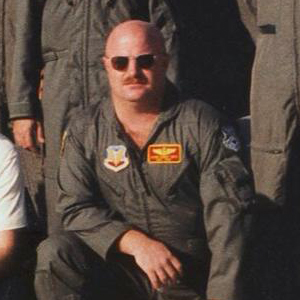

United States Department of Agriculture / National Agricultural Statistics Service
Webmaster
January 2015 - Present
Computer Geeks Online
Sr. Frontend Developer
July 2014 - January 2015
The Informatics Applications Group
Information Technology Specialist
July 2012 - June 2014
U.S. Army Family, Morale, Welfare, and Recreation - USAG Garmisch
Marketing Assistant
June 2009 - June 2012
SRA International
E-Learning Designer/Developer
June 2004 - June 2008
United States Air Force
Master Sergeant - Airborne Command and Control Specialist
September 1979 - June 2004